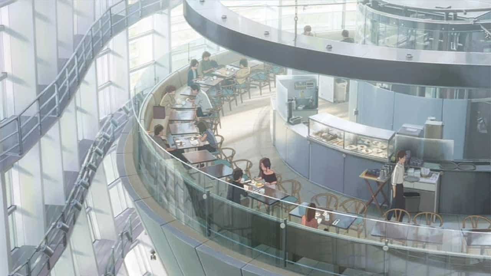
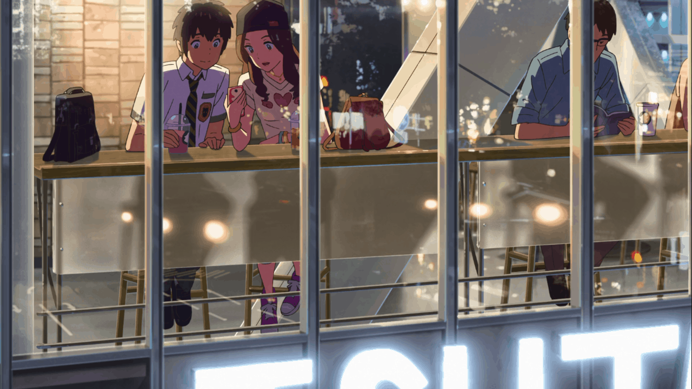

Il Giardino delle Parole

This is the Italian restaurant where Taki works part-time in Tokyo. In the movie, you can see him serving customers and making dishes while learning the ins and outs of city life. The restaurant feels cozy and quiet with warm lighting and wooden tables, a calm place in the middle of the busy city.
Salon de Thé Rond
This café is where Taki takes Miki Okudera on a date. It is located inside the National Art Center in Tokyo. In the movie, the café has big windows and lots of light, making it a nice, relaxed place to enjoy coffee and desserts. The scene shows Taki’s life in the city and gives a modern contrast to Mitsuha’s small-town world.
Autumn festival
There are small cafes like the one shown where there are beverages and pasteries being sold. It is probably the most famous Starbucks in all of Japan because of its strategic location on the larger-than-life Shibuya Scramble crossing. Taki and Okudera-senpai share a good time in the window seats overlooking said crossing, providing them with one of the most coveted tourist views.